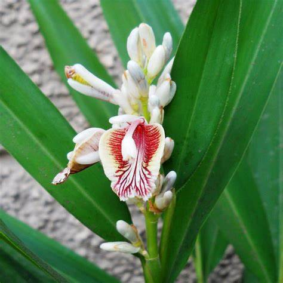

Basonym of Drug
Rasna
Main Synonym
- Aelaparni
- Yuktarasa
- Rasya
- Suvaha
- Rasana
- Rasa
- Surasa
- Shreyashi
- Sugandha
Regional Name
- Bengali: Antomoola
- Hindi: Antamoola, Jangali Pikavan
- Kannada: Kirumanji
- Tamil: Naypalai
- Telugu: Veripal
- Marathi: Khadaki Rasna
- Malayalam: Vallipala
Botanical Name
Pluchea lanceolata Oliver & Hiern. / Alpinea galanga
Family
- Compositae / Zingiberaceae
External Morphology
50-100 cm high herb
Useful Parts
Important Phytoconstituent
- Galangin
- Kaempferide
- Diarylheptanoides
Rasa Panchak
- Rasa: Tikta
- Guna: Guru
- Virya: Ushna
- Vipaka: Katu
Action
Therapeutic Indication
- Vayasthapana (Anti-aging)
- Sothahara (Anti-inflammatory)
- Jwarahara (Anti-pyretic)
- Vatraktahara (Treat gout)
Therapeutic Uses
- Vatavyadhi: Decoction of Rasna is useful to treat arthritic pain and inflammations.
- Vatrakta: Root paste is applied with water in gout externally.
- Kasa: Root powder with Vacha and Yastimadhu is beneficial in chronic cough.
Dose
- Root powder - 1-3 gm
- Decoction - 40-80 ml
Formulations
- Maharasnadi Kwath
- Rasnasaptaka Kwath
- Rasnadi Kwath
- Rasnadi Taila
Adverse Effect
Not Known